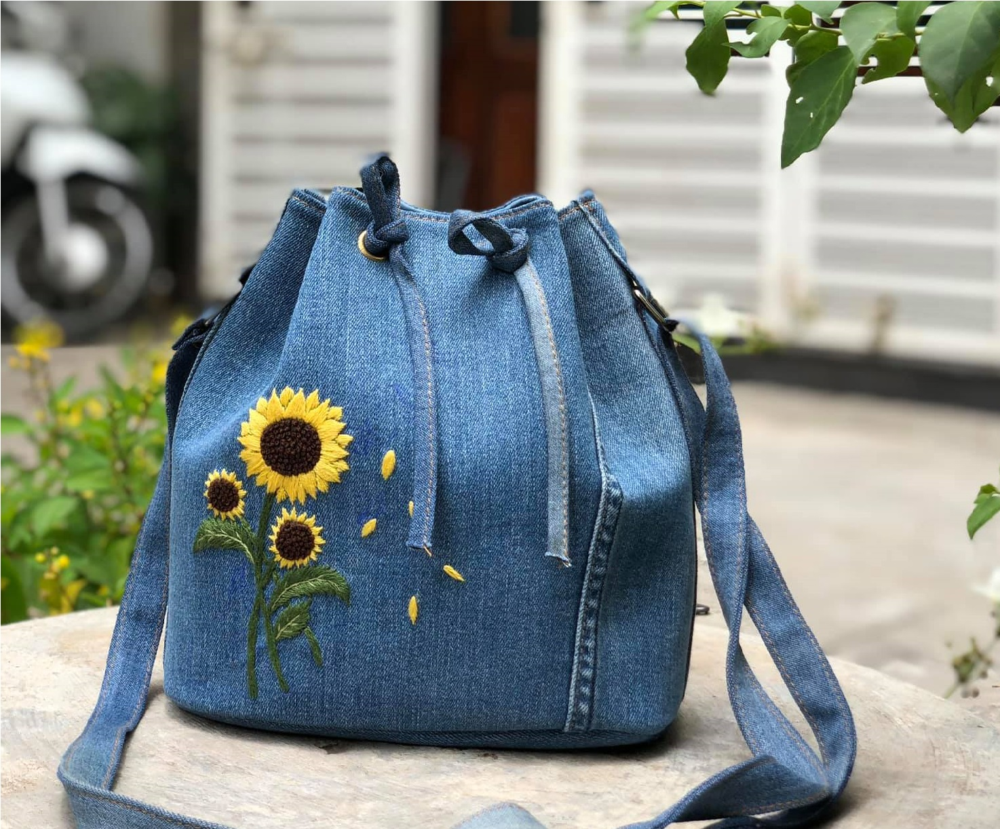

TIN TỨC
Xu hướng thời trang hè thu 2021Cách chọn trang phục cho cô nàng công sở
DIY sunchies - Tự làm dây buộc tóc xinh xắn
Recyle Jeans - Những chiếc túi tái chế đẹp tới không ngờ
Tự làm khẩu trang phòng chống dịch cùng AnChi
Xem thêm
ĐÃ TỚI LÚC THỜI TRANG XANH THAY THẾ THỜI TRANG NHANH
Ước tính mỗi năm, ngành công nghiệp thời trang thải ra hơn 90 tỷ m3 nước và nửa triệu tấn vi sợi. Lượng khí carbon phát thải từ các xưởng may nhiều hơn lượng phát thải từ các máy bay và tàu thủy cộng lại. Theo Liên Hợp Quốc, đã đến lúc phải chuyển từ thời trang nhanh sang thời trang bền vững (thời trang "xanh").

Thời trang bền vững thực sự là gì?
Với các thương hiệu thời trang thì thời trang bền vững có nghĩa là: tạo ra trang phục theo cách mà con người có sự cân nhắc kĩ lưỡng hơn về các yếu tố xung quanh hành tinh, con người và động vật. Điều đó cũng có nghĩa rằng làm thời trang mà không để lại dấu vết gây hại nào cho môi trường, không huỷ diệt thế giới mà chúng ta đang sống.
Vậy làm sao để chúng ta sống bền vững hơn?
Mặc dù không thể sống xanh tuyệt đối nhưng chúng ta vẫn có thể góp phần giảm thiểu những ảnh hưởng tiêu cực của con người đối với hành tinh này. Ở phương diện tiêu dùng thời trang, chúng ta có thể thực hiện các giải pháp đơn giản sau đây:
1. Lựa chọn chất liệu thân thiện với môi trường:
Các sản phẩm từ sợi lanh, cotton hữu cơ, tơ tằm,... luôn là những sản phẩm tuyệt vời cho người mặc. Không những nguyên liệu thân thiện môi trường và người sử dụng, những nguyên liệu này còn dễ dàng phân hủy hơn rất nhiều so với các loại sợi tổng hợp.
2. Tái chế tất cả những gì có thể:
Bạn đã từng vứt đi bao nhiêu bộ quần áo vì "lỗi mốt" trước khi chúng bị hỏng? Thay vì ném chúng đi, hãy cho chúng một vòng lặp mới với những trang trí đơn giản hay vận dụng các tips DIY nhé. Đặc biệt với những chất liệu như Jeans, bạn hoàn toàn có thể tái sử dụng để may những chiếc túi độc đáo.
3. Cân nhắc kỹ hơn về những sản phẩm từ lông động vật:
Vì sao lại thế ư? Những sản phẩm như da thuộc, lông động vật luôn mang đến sự sang trọng cho người mặc, tuy nhiên để có những bộ trang phục như vậy, nhiều loài động vật đang đứng trước nguy cơ tuyệt chủng. Ngoài ra, quá trình chăm nuôi động vật và thuộc da cũng thải ra rất nhiều chất gây ô nhiễm và đe dọa sự phát triển của các loài động vật.
4. Đem trao đổi hoặc từ thiện:
Những bộ trang phục không còn phù hợp với bạn nhưng lại có thể phù hợp với người khác. Do đó, đừng ngại ngần tham gia những chương trình từ thiện hay hội chợ trao dổi đồ nhé. Đó cũng là trải nghiệm rất thú vị đó.
5. Cân nhắc kỹ hơn với những bộ trang phục "một lần"
Có những bộ trang phục rất khó ứng dụng thường ngày ví dụ như trang phục dạ hội, dường như các bạn chỉ mặc chúng 1-2 lần. Thay vì mua những bộ trang phục đắt đỏ với số lần mặc hạn chế, bạn có thể thuê chúng tại các tiệm thời trang.